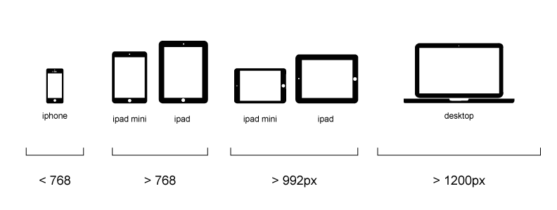

We're going to focus on the basics.
- Designing a front-end that works across multiple device breakpoints.
- Focus on page layout & composition.
html css js
Front-End BFFs
- The three technologies that make up the web's 'front-end'
- They've advanced over time but haven't been replaced since their introduction.
- Libraries like Bootstrap or jQuery are combinations of one or more of these technologies
Think of html as a tree.
A big tree of parent/child relationships


css
applies style to your html
When we talk about the RWD basics.
We're talking about html css
Media Queries allow us to define multiple sets of styles based on device features like screen orientation, display dimensions & resolution
Project Planning: setting responsive breakpoints
- display sizes are NOT standardized
- display sizes are a spectrum and breakpoints are points along that spectrum where you want to redefine your UI and layout
- typically you set 3 breakpoints (mobile, tablet, desktop) and let the devices sort themselves out based on their dimensions

Resolution and device orientation
- screen resolution and device orientation add complexity to our nice breakpoint spectrum

Device width vs. browser width
starbucks vs frog
Advanced Topics & Tips & Do's and Don'ts
- DO hide/show elements
- DON'T duplicate DOM elements because you're breaking the parent/child nesting
Things to consider
- no rollovers on touch devices
Mobile First
- mobile first can be a strategy for a product, the design process or for development
- mobile first example